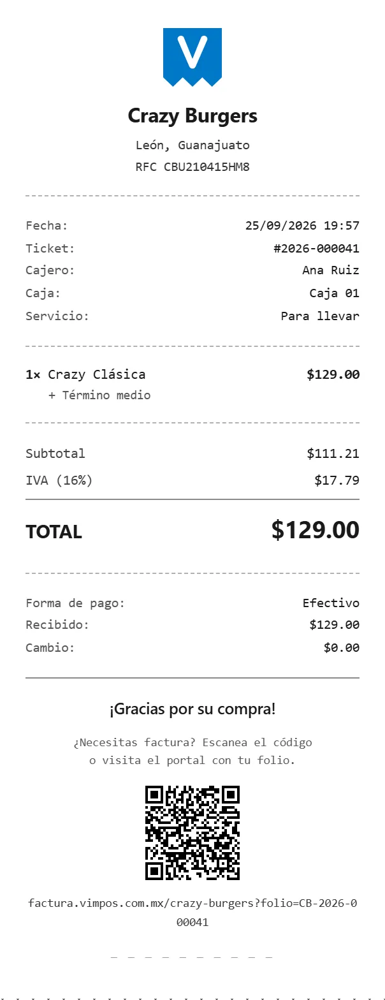

Facturación
Muy prontoFacturación CFDI 4.0, sin parar la fila
Tu comensal escanea el código del ticket, pone su RFC y recibe su factura por correo. Lo que nadie facturó se junta solo en la factura global del periodo. Tu cajero no vuelve a capturar datos fiscales y tú no vuelves a recibir el mensaje de «¿me pueden facturar lo del sábado?».
El módulo está construido y probado. Estamos cerrando la activación con el PAC —el proveedor autorizado de certificación—, así que todavía no lo encendemos. Abajo dice exactamente qué falta.
Cómo funciona
El ticket ya trae el código
No hay que mandar a nadie a un portal aparte ni dictar un folio por teléfono. El ticket que sale de tu impresora lleva impreso el código: se escanea con la cámara del teléfono, se capturan los datos fiscales una vez, y la factura llega al correo del cliente.

Lo que cubre
Las tres cosas que el SAT te pide, y ninguna a mano
Timbrado individual
Cada ticket que pida factura se timbra con su CFDI 4.0 y llega por correo. Sin que nadie del mostrador abra otro programa ni teclee un RFC.
La factura global, automática
Lo que nadie facturó se junta en una sola factura al cerrar el periodo que tú elijas: diario, semanal, quincenal o mensual. Es lo que el SAT te pide, y sale sin que hagas nada.
Autofacturación por QR
El portal donde tu cliente hace el trámite solo. Es tuyo, con tus datos, y no lo atiende nadie de tu equipo.
El detalle que cambia el mes
Hasta cuándo pueden facturar lo decides tú
En muchos sistemas el cliente tiene «el mes en curso» y se acabó: llega el día 1 y quien no facturó se queda sin factura, y quien reclama te lo reclama a ti. Aquí el plazo es tu periodo, y el periodo lo configuras tú. Si cierras quincenal, tienen hasta que cierres la quincena.
Lo que hay que darnos
Tu sello del SAT. Tu e.firma no.
Para timbrar hacen falta tres cosas: tu sello digital del SAT (el CSD), su contraseña, y tu RFC vigente. Nada más.
La e.firma no te la pedimos. Ésa es tu llave maestra —con ella se hacen trámites que no tienen nada que ver con facturar— y no tenemos por qué tenerla. Si algún proveedor te la pide para esto, vale la pena preguntar para qué.
Y tu sello no se queda con nosotros
Pasa del panel al proveedor autorizado y se descarta. De nuestro lado solo guardamos cuál es y cuándo vence, para avisarte antes de que caduque y no te enteres el día que deja de timbrar.
Qué cuesta
Incluida en Negocio y en Cadena
En el plan Esencial se agrega por $349 al mes, más IVA. Los folios que trae tu plan son para la factura del periodo —el cumplimiento ante el SAT—, no para facturarle a cada cliente. Si se te acaban, compras un paquete y se suma a tu saldo: no caducan mientras tengas tu suscripción activa.
| Paquete | Precio | Sale a |
|---|---|---|
| 100 folios | $200 | $2.00 cada uno |
| 250 folios | $450 | $1.80 cada uno |
| 500 folios | $750 | $1.50 cada uno |
| 1,000 folios | $1,300 | $1.30 cada uno |
| 5,000 folios | $5,000 | $1.00 cada uno |
Precios más IVA. La tabla completa de los tres planes está en la página de precios.
Dónde está hoy
Qué falta para encenderlo
El módulo está construido y probado de punta a punta: timbrado, factura global y el portal de autofacturación. Lo que se emite hoy son comprobantes de prueba, y por eso no lo anunciamos como disponible.
Lo que falta es cerrar la activación con el PAC. En una demo te decimos la fecha real; no la publicamos aquí hasta que sea firme, porque una fecha que se mueve es peor que no dar ninguna.
Preguntas
Lo que nos preguntan de la facturación
Sí. La caja, la cocina, las mesas y el inventario no dependen de ella, y hoy es lo que están usando quienes ya tienen el sistema. La facturación se enciende cuando cierre la activación, sin que tengas que cambiar nada.
Para timbrar sí: el sello viaja al PAC y el PAC responde. Para cobrar no — eso sigue funcionando sin conexión, y el ticket sale con su código igual. Cuando vuelve la señal, lo pendiente se timbra solo. Está explicado en qué pasa sin internet.
Te avisamos antes. De tu sello guardamos cuál es y cuándo vence precisamente para eso: enterarte el día que deja de timbrar es enterarte tarde.
Te lo enseñamos funcionando
Media hora con tus productos y tus precios cargados, y la facturación en modo de prueba para que veas exactamente cómo va a quedar. Sin presentación y sin compromiso.